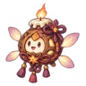
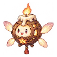
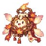

No.083
ヨルトモ
灯 進化形
薄い翼に小さな灯を縫い込んでいる。夜の花を訪れると花粉が赤く輝く。
基本データ
| 図鑑番号 | No.083 |
|---|---|
| タイプ | 灯タイプ |
| 進化 | Lv.32でアカツバメに進化 |
| 入手方法 | 玄武の峡門（Lv.38〜42）、日輪の鍛炉（Lv.53〜57）の草むらに出現。 |
Lv.50の能力値
| HP | 294 | |
|---|---|---|
| 攻撃 | 168 | |
| 防御 | 121 | |
| 特攻 | 169 | |
| 特防 | 123 | |
| 素早さ | 115 | |
| 命中 | 97 | |
| 回避 | 99 |
冒険中の能力値はレベルに応じて上がります。オンライン対戦の通常レンタルはLv.50で統一されます。
覚える技
| 技 | タイプ | 分類 | 威力 | 命中 | PP | 効果 |
|---|---|---|---|---|---|---|
| 熾火の分け合い | 灯 | 特殊 | 26 | 98 | 30 | 与えたダメージの25%を吸収する。 |
| 溶鉱の槌 | 灯 | 物理 | 43 | 85 | 10 | 溶けた金属の重い響きで守りを貫く。 |
| 梢の合唱 | 芽 | 特殊 | 32 | 98 | 20 | 枝葉の音を重ねて相手を包む。 |
| 灰羽の外套 | 灯 | 防御 | — | — | 15 | 柔らかな灰の羽で、次の攻撃を半減する。 |
進化の系譜

ルミトモLv.16 ▶- ヨルトモLv.32 ▶

アカツバメ
タイプ相性
灯タイプの技は芽タイプに強く（1.5倍）、潮タイプの技を受けると効果が大きくなります。同じタイプの技を使うと威力が1.15倍になります。